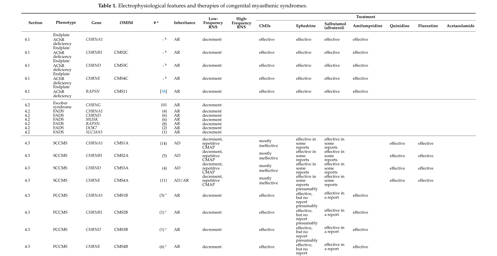

Congenital myasthenic syndromes (CMS) are a clinically and genetically heterogeneous group of inherited disorders of neuromuscular junction (NMJ) transmission, caused by germline pathogenic variants in genes expressed at the motor endplate. At least 35 CMS-associated genes have been reported. Despite the diversity of the upstream molecular lesion, all subtypes converge on a single shared terminal mechanism — a reduced safety factor of neuromuscular transmission — that produces the uniform clinical phenotype of fatigable muscle weakness affecting ocular, bulbar, facial, axial, respiratory, and limb muscles. CMS is distinguished from autoimmune myasthenia gravis by its genetic (rather than antibody-mediated) etiology, typical onset in infancy or childhood, and the absence of anti-AChR / anti-MuSK autoantibodies. Diagnosis requires demonstration of a decremental compound muscle action potential response on low-frequency repetitive nerve stimulation (RNS) and/or abnormal single-fiber EMG jitter, with confirmatory genetic testing. This is the umbrella entry for the CMS family; subtypes are organized by the NMJ location of the defective protein — presynaptic, synaptic (basal-lamina), postsynaptic, and an N-glycosylation group — because therapeutic response is largely predictable from this mechanistic class (a drug helpful in one subtype may be ineffective or harmful in another). The prenatal-lethal CHRNA1 fetal akinesia disorder is curated separately as the severe end of the AChR spectrum.
Ask a research question about Congenital Myasthenic Syndrome. OpenScientist will conduct autonomous deep research using the Disorder Mechanisms Knowledge Base and PubMed literature (typically 10-30 minutes).
Do not include personal health information in your question. Questions and results are cached in your browser's local storage.
name: Congenital Myasthenic Syndrome
creation_date: "2026-06-15T00:00:00Z"
category: Mendelian
disease_term:
preferred_term: Congenital Myasthenic Syndrome
term:
id: MONDO:0018940
label: congenital myasthenic syndrome
parents:
- Neuromuscular Disease
description: >-
Congenital myasthenic syndromes (CMS) are a clinically and genetically
heterogeneous group of inherited disorders of neuromuscular junction (NMJ)
transmission, caused by germline pathogenic variants in genes expressed at the
motor endplate. At least 35 CMS-associated genes have been reported. Despite
the diversity of the upstream molecular lesion, all subtypes converge on a
single shared terminal mechanism — a reduced safety factor of neuromuscular
transmission — that produces the uniform clinical phenotype of fatigable
muscle weakness affecting ocular, bulbar, facial, axial, respiratory, and
limb muscles. CMS is distinguished from autoimmune myasthenia gravis by its
genetic (rather than antibody-mediated) etiology, typical onset in infancy or
childhood, and the absence of anti-AChR / anti-MuSK autoantibodies.
Diagnosis requires demonstration of a decremental compound muscle action
potential response on low-frequency repetitive nerve stimulation (RNS) and/or
abnormal single-fiber EMG jitter, with confirmatory genetic testing.
This is the umbrella entry for the CMS family; subtypes are organized by the
NMJ location of the defective protein — presynaptic, synaptic (basal-lamina),
postsynaptic, and an N-glycosylation group — because therapeutic response is
largely predictable from this mechanistic class (a drug helpful in one subtype
may be ineffective or harmful in another). The prenatal-lethal CHRNA1 fetal
akinesia disorder is curated separately as the severe end of the AChR
spectrum.
has_subtypes:
- name: Presynaptic
display_name: Presynaptic CMS
description: >-
Defects in acetylcholine (ACh) synthesis, vesicular packaging, or release at
the motor nerve terminal. CHAT (choline acetyltransferase) is the commonest
presynaptic gene; other genes include SLC5A7, SLC18A3, SNAP25, SYT2, VAMP1,
and UNC13A. Presynaptic CMS comprise roughly 5-10% of all CMS and frequently
present prenatally/neonatally with a severe phenotype that can include
arthrogryposis, developmental delay, and episodic/sudden apneic crises
(classically CHAT-CMS, "CMS with episodic apnea").
evidence:
- reference: PMID:37212067
supports: SUPPORT
evidence_source: HUMAN_CLINICAL
snippet: "They can result from a dysfunction in acetylcholine (ACh) synthesis or recycling, in its packaging into synaptic vesicles, or its subsequent release into the synaptic cleft."
explanation: Defines the presynaptic CMS mechanistic group by the affected step of ACh handling.
- reference: PMID:37212067
supports: SUPPORT
evidence_source: HUMAN_CLINICAL
snippet: "Presynaptic CMS usually presents during the prenatal or neonatal period, with a severe phenotype including congenital arthrogryposis, developmental delay, and apnoeic crisis."
explanation: Establishes the severe prenatal/neonatal presentation typical of presynaptic CMS.
- name: Synaptic
display_name: Synaptic (Basal-Lamina) CMS
description: >-
Defects in proteins of the synaptic basal lamina. The prototype is COLQ-CMS:
COLQ encodes the collagen-like tail subunit that anchors acetylcholinesterase
(AChE) in the synaptic cleft, so biallelic loss produces endplate AChE
deficiency with prolonged ACh action. Other synaptic-cleft genes include
LAMB2, LAMA5, and COL13A1. Synaptic CMS characteristically does NOT respond
to (and may worsen with) cholinesterase inhibitors, but responds to ephedrine
and salbutamol.
evidence:
- reference: PMID:38475910
supports: SUPPORT
evidence_source: HUMAN_CLINICAL
snippet: "Mutations in the collagen-like tail subunit gene (COLQ) of acetylcholinesterase are responsible for recessive forms of synaptic congenital myasthenic syndromes with end plate acetylcholinesterase deficiency."
explanation: Defines COLQ-CMS as the synaptic basal-lamina subtype with endplate AChE deficiency.
- name: Postsynaptic
display_name: Postsynaptic CMS
description: >-
Defects of the postsynaptic membrane — by far the largest group. Includes
primary AChR deficiency and AChR kinetic abnormalities (slow-channel and
fast-channel syndromes) from variants in the AChR subunit genes (CHRNE,
CHRNA1, CHRNB1, CHRND, CHRNG), and defects of endplate development /
maintenance and AChR clustering (RAPSN, DOK7, MUSK, AGRN, LRP4). CHRNE
low-expressor variants and DOK7 are among the most common CMS genotypes
overall. Slow-channel CMS (SCCMS) is the principal autosomal dominant form.
evidence:
- reference: PMID:38696726
supports: SUPPORT
evidence_source: HUMAN_CLINICAL
snippet: "CHRNE-low expressor variants were the most common (23.8%), followed by variants in DOK7 (18.7%) and RAPSN (14%)."
explanation: Quantifies the dominant postsynaptic genotypes (CHRNE, DOK7, RAPSN) in a 235-patient adult cohort.
- name: Glycosylation
display_name: Glycosylation-Related CMS
description: >-
Defects in the N-linked protein glycosylation pathway (GFPT1, DPAGT1, ALG2,
ALG14, GMPPB) that impair glycosylation of multiple NMJ glycoproteins,
including the AChR, producing a "combination" endplate defect. These
typically present as a limb-girdle CMS, often with tubular aggregates on
muscle biopsy and elevated creatine kinase, and respond to cholinesterase
inhibitors. Glycosylation genes are an increasingly recognized cause,
accounting for over 20% of cases in some cohorts.
evidence:
- reference: PMID:37721175
supports: SUPPORT
evidence_source: HUMAN_CLINICAL
snippet: "postsynaptic defects were most common (62.4%), followed by glycosylation defects (21.3%), synaptic basal lamina genes (4.3%) and presynaptic defects (2.8%)."
explanation: Quantifies the relative frequency of the four mechanistic subtype groups in a 156-patient Indian cohort.
mechanistic_hypotheses:
- hypothesis_group_id: canonical_nmj_transmission_failure_model
hypothesis_label: Canonical NMJ Transmission Failure Model
status: CANONICAL
description: >-
Congenital myasthenic syndromes are caused by germline pathogenic variants
in genes encoding proteins of the neuromuscular junction. Regardless of
whether the primary lesion is presynaptic (impaired ACh synthesis, packaging,
or release), synaptic (basal-lamina / endplate AChE anchoring), postsynaptic
(AChR deficiency or abnormal channel kinetics, or impaired AChR clustering),
or in the N-glycosylation pathway, the converging consequence is a reduced
safety factor of neuromuscular transmission — the endplate potential fails to
reliably reach the threshold needed to trigger a muscle fiber action
potential, especially during sustained or repetitive activity. This
manifests electrophysiologically as a decremental CMAP response on
low-frequency repetitive nerve stimulation and increased jitter/blocking on
single-fiber EMG, and clinically as fatigable muscle weakness. The
mechanistic subtype predicts the pharmacological response: cholinesterase
inhibitors help most groups but are contraindicated in some (e.g. COLQ /
endplate AChE deficiency and slow-channel CMS), whereas salbutamol/ephedrine
are broadly beneficial.
pathophysiology:
- name: Impaired Neuromuscular Junction Transmission
description: >-
The shared terminal mechanism of all CMS subtypes. A defect in any
component of the motor endplate — presynaptic ACh handling, synaptic AChE
anchoring, postsynaptic AChR density/kinetics, AChR clustering, or NMJ
glycoprotein glycosylation — reduces the safety factor of cholinergic
synaptic transmission. The endplate potential generated by ACh release
becomes insufficient to consistently trigger a postsynaptic muscle fiber
action potential, and this insufficiency worsens with repetitive activity,
producing fatigable weakness.
cell_types:
- preferred_term: Skeletal muscle fiber (postsynaptic motor endplate)
term:
id: CL:0008002
label: skeletal muscle fiber
- preferred_term: Motor neuron (presynaptic terminal)
term:
id: CL:0000100
label: motor neuron
biological_processes:
- preferred_term: Cholinergic synaptic transmission at the NMJ
term:
id: GO:0007271
label: synaptic transmission, cholinergic
modifier: DECREASED
- preferred_term: Neuromuscular synaptic transmission
term:
id: GO:0007274
label: neuromuscular synaptic transmission
modifier: DECREASED
evidence:
- reference: PMID:36835142
supports: SUPPORT
evidence_source: HUMAN_CLINICAL
snippet: "Congenital myasthenic syndromes (CMS) are a heterogeneous group of disorders characterized by impaired neuromuscular signal transmission due to germline pathogenic variants in genes expressed at the neuromuscular junction (NMJ)."
explanation: Establishes impaired NMJ transmission as the unifying pathomechanism across all CMS genes.
- reference: PMID:37239850
supports: SUPPORT
evidence_source: HUMAN_CLINICAL
snippet: "While the phenotypic presentation of these disorders is diverse, the unifying feature is a pathomechanism that disrupts neuromuscular transmission."
explanation: Confirms that disrupted NMJ transmission is the common terminal mechanism despite phenotypic diversity.
downstream:
- target: Neck Muscle Weakness
causal_link_type: UNKNOWN
description: >-
Orphanet records neck muscle weakness as a very frequent phenotype in
congenital myasthenic syndrome.
evidence:
- reference: ORPHA:590
reference_title: Congenital myasthenic syndrome
supports: SUPPORT
evidence_source: OTHER
snippet: "HP:0000467 | Neck muscle weakness | Very frequent (99-80%)"
explanation: Orphanet records neck muscle weakness as very frequent in CMS.
- target: Dysphagia
causal_link_type: UNKNOWN
description: >-
Orphanet records dysphagia as a very frequent bulbar phenotype in
congenital myasthenic syndrome.
evidence:
- reference: ORPHA:590
reference_title: Congenital myasthenic syndrome
supports: SUPPORT
evidence_source: OTHER
snippet: "HP:0002015 | Dysphagia | Very frequent (99-80%)"
explanation: Orphanet records dysphagia as very frequent in CMS.
- target: Poor Suck
causal_link_type: UNKNOWN
description: >-
Orphanet records poor suck as a very frequent early feeding phenotype in
congenital myasthenic syndrome.
evidence:
- reference: ORPHA:590
reference_title: Congenital myasthenic syndrome
supports: SUPPORT
evidence_source: OTHER
snippet: "HP:0002033 | Poor suck | Very frequent (99-80%)"
explanation: Orphanet records poor suck as very frequent in CMS.
- target: Feeding Difficulties
causal_link_type: UNKNOWN
description: >-
Orphanet records feeding difficulties as a very frequent phenotype in
congenital myasthenic syndrome.
evidence:
- reference: ORPHA:590
reference_title: Congenital myasthenic syndrome
supports: SUPPORT
evidence_source: OTHER
snippet: "HP:0011968 | Feeding difficulties | Very frequent (99-80%)"
explanation: Orphanet records feeding difficulties as very frequent in CMS.
- target: Ataxia
causal_link_type: UNKNOWN
description: >-
Orphanet records ataxia as a frequent neurologic phenotype in congenital
myasthenic syndrome.
evidence:
- reference: ORPHA:590
reference_title: Congenital myasthenic syndrome
supports: SUPPORT
evidence_source: OTHER
snippet: "HP:0001251 | Ataxia | Frequent (79-30%)"
explanation: Orphanet records ataxia as frequent in CMS.
- target: Gait Disturbance
causal_link_type: UNKNOWN
description: >-
Orphanet records gait disturbance as a frequent neurologic phenotype in
congenital myasthenic syndrome.
evidence:
- reference: ORPHA:590
reference_title: Congenital myasthenic syndrome
supports: SUPPORT
evidence_source: OTHER
snippet: "HP:0001288 | Gait disturbance | Frequent (79-30%)"
explanation: Orphanet records gait disturbance as frequent in CMS.
- target: Central Sleep Apnea
causal_link_type: UNKNOWN
description: >-
Orphanet records central sleep apnea as a frequent respiratory phenotype
in congenital myasthenic syndrome.
evidence:
- reference: ORPHA:590
reference_title: Congenital myasthenic syndrome
supports: SUPPORT
evidence_source: OTHER
snippet: "HP:0010536 | Central sleep apnea | Frequent (79-30%)"
explanation: Orphanet records central sleep apnea as frequent in CMS.
- target: Choking Episodes
causal_link_type: UNKNOWN
description: >-
Orphanet records choking episodes as a frequent feeding/respiratory
phenotype in congenital myasthenic syndrome.
evidence:
- reference: ORPHA:590
reference_title: Congenital myasthenic syndrome
supports: SUPPORT
evidence_source: OTHER
snippet: "HP:0030842 | Choking episodes | Frequent (79-30%)"
explanation: Orphanet records choking episodes as frequent in CMS.
- target: Arthrogryposis Multiplex Congenita
causal_link_type: UNKNOWN
description: >-
Orphanet records arthrogryposis multiplex congenita as a frequent
musculoskeletal phenotype in congenital myasthenic syndrome.
evidence:
- reference: ORPHA:590
reference_title: Congenital myasthenic syndrome
supports: SUPPORT
evidence_source: OTHER
snippet: "HP:0002804 | Arthrogryposis multiplex congenita | Frequent (79-30%)"
explanation: Orphanet records arthrogryposis multiplex congenita as frequent in CMS.
- name: Presynaptic Acetylcholine Handling Defect
description: >-
In presynaptic CMS, the lesion lies in the motor nerve terminal: impaired
ACh synthesis or recycling (CHAT, SLC5A7, SLC18A3), or impaired vesicular
packaging and calcium-triggered exocytotic release (SNAP25, SYT2, VAMP1,
UNC13A). The result is reduced quantal content of ACh release, lowering the
endplate potential.
cell_types:
- preferred_term: Motor neuron presynaptic terminal
term:
id: CL:0000100
label: motor neuron
biological_processes:
- preferred_term: Acetylcholine biosynthetic process
term:
id: GO:0008292
label: acetylcholine biosynthetic process
modifier: DECREASED
evidence:
- reference: PMID:37212067
supports: SUPPORT
evidence_source: HUMAN_CLINICAL
snippet: "They can result from a dysfunction in acetylcholine (ACh) synthesis or recycling, in its packaging into synaptic vesicles, or its subsequent release into the synaptic cleft."
explanation: Defines the presynaptic ACh-handling defect at the nerve terminal.
downstream:
- target: Impaired Neuromuscular Junction Transmission
description: >-
Defective acetylcholine synthesis, packaging, or release at the nerve
terminal reduces the safety margin of neuromuscular transmission.
- name: Endplate Acetylcholinesterase Deficiency
description: >-
In synaptic (basal-lamina) CMS, loss of COLQ removes the collagen tail that
anchors acetylcholinesterase in the synaptic cleft. The resulting endplate
AChE deficiency prolongs ACh dwell time, causing cationic overload and
depolarization block / endplate myopathy. Because residual AChE activity is
already absent, cholinesterase inhibitors provide no benefit and may be
harmful.
cell_types:
- preferred_term: Skeletal muscle fiber endplate
term:
id: CL:0008002
label: skeletal muscle fiber
evidence:
- reference: PMID:38475910
supports: SUPPORT
evidence_source: HUMAN_CLINICAL
snippet: "Mutations in the collagen-like tail subunit gene (COLQ) of acetylcholinesterase are responsible for recessive forms of synaptic congenital myasthenic syndromes with end plate acetylcholinesterase deficiency."
explanation: Establishes endplate AChE deficiency as the synaptic CMS mechanism caused by COLQ loss.
- reference: PMID:38475910
supports: SUPPORT
evidence_source: HUMAN_CLINICAL
snippet: "There was no benefit from esterase inhibitor treatment, while treatment with ephedrine and salbutamol was objectively efficient in all cases."
explanation: Confirms the mechanistically predicted lack of AChE-inhibitor benefit in endplate AChE deficiency.
downstream:
- target: Impaired Neuromuscular Junction Transmission
description: >-
Loss of endplate acetylcholinesterase prolongs ACh dwell time, causing
cationic overload and depolarization block that impairs transmission.
- name: Postsynaptic AChR Deficiency, Kinetic Defect, and Impaired Clustering
description: >-
The largest mechanistic group. Variants in AChR subunit genes (CHRNE,
CHRNA1, CHRNB1, CHRND) reduce endplate AChR density (primary AChR deficiency)
or alter channel gating kinetics — prolonged openings in slow-channel CMS
(cationic overload, endplate degeneration) or abbreviated openings in
fast-channel CMS (reduced response to ACh). Variants in the
agrin-LRP4-MuSK-DOK7-rapsyn signaling axis (AGRN, LRP4, MUSK, DOK7, RAPSN)
impair AChR clustering and endplate development/maintenance.
cell_types:
- preferred_term: Skeletal muscle fiber postsynaptic membrane
term:
id: CL:0008002
label: skeletal muscle fiber
biological_processes:
- preferred_term: Skeletal muscle acetylcholine-gated channel clustering
term:
id: GO:0071340
label: skeletal muscle acetylcholine-gated channel clustering
modifier: DECREASED
- preferred_term: Neuromuscular junction development
term:
id: GO:0007528
label: neuromuscular junction development
modifier: ABNORMAL
evidence:
- reference: PMID:38696726
supports: SUPPORT
evidence_source: HUMAN_CLINICAL
snippet: "CHRNE-low expressor variants were the most common (23.8%), followed by variants in DOK7 (18.7%) and RAPSN (14%)."
explanation: Identifies the dominant postsynaptic AChR-subunit and clustering-pathway genotypes.
downstream:
- target: Impaired Neuromuscular Junction Transmission
description: >-
Reduced postsynaptic AChR density, altered channel gating, or impaired
AChR clustering diminishes the endplate response to acetylcholine.
- name: NMJ Glycoprotein Glycosylation Defect
description: >-
In glycosylation-related CMS, variants in the N-linked glycosylation pathway
(GFPT1, DPAGT1, ALG2, ALG14, GMPPB) reduce glycosylation of multiple NMJ
glycoproteins including the AChR, producing a combined endplate defect with a
characteristic limb-girdle distribution and frequently tubular aggregates on
muscle biopsy.
cell_types:
- preferred_term: Skeletal muscle fiber
term:
id: CL:0008002
label: skeletal muscle fiber
biological_processes:
- preferred_term: Protein N-linked glycosylation
term:
id: GO:0006487
label: protein N-linked glycosylation
modifier: DECREASED
evidence:
- reference: PMID:37721175
supports: SUPPORT
evidence_source: HUMAN_CLINICAL
snippet: "underlines the increasing significance of glycosylation genes (DPAGT1, GFPT1 and GMPPB) as a cause of neuromuscular junction defects"
explanation: Establishes the N-glycosylation pathway genes as a mechanistic cause of NMJ dysfunction.
downstream:
- target: Impaired Neuromuscular Junction Transmission
description: >-
Hypoglycosylation of NMJ glycoproteins (including the AChR) produces a
combined endplate defect that impairs neuromuscular transmission.
phenotypes:
- category: Neurologic
name: Fatigable Muscle Weakness
diagnostic: true
description: >-
The cardinal manifestation of CMS: abnormal fatigability and fluctuating or
permanent weakness of extra-ocular, facial, bulbar, axial, respiratory, or
limb muscles, worsening with exertion.
phenotype_term:
preferred_term: Fatigable weakness
term:
id: HP:0003473
label: Fatigable weakness
evidence:
- reference: PMID:30808424
supports: SUPPORT
evidence_source: HUMAN_CLINICAL
snippet: "these mutations manifest as abnormal fatigability or permanent or fluctuating weakness of extra-ocular, facial, bulbar, axial, respiratory, or limb muscles, hypotonia, or developmental delay."
explanation: Establishes fatigable/fluctuating weakness across muscle groups as the core CMS phenotype.
- category: Neurologic
name: Increased Muscle Fatigability
phenotype_term:
preferred_term: Increased muscle fatigability
term:
id: HP:0003750
label: Increased muscle fatiguability
evidence:
- reference: PMID:30808424
supports: SUPPORT
evidence_source: HUMAN_CLINICAL
snippet: "these mutations manifest as abnormal fatigability or permanent or fluctuating weakness of extra-ocular, facial, bulbar, axial, respiratory, or limb muscles, hypotonia, or developmental delay."
explanation: Documents abnormal fatigability as a defining CMS feature.
- category: HEENT
name: Ptosis
phenotype_term:
preferred_term: Ptosis
term:
id: HP:0000508
label: Ptosis
evidence:
- reference: PMID:38475910
supports: SUPPORT
evidence_source: HUMAN_CLINICAL
snippet: "Clinical presentation includes ptosis, ophthalmoparesis, and progressive weakness with onset at birth or early infancy."
explanation: Ptosis is a common presenting ocular sign in CMS.
- category: HEENT
name: Ophthalmoparesis
phenotype_term:
preferred_term: Ophthalmoparesis
term:
id: HP:0000597
label: Ophthalmoparesis
evidence:
- reference: PMID:38475910
supports: SUPPORT
evidence_source: HUMAN_CLINICAL
snippet: "Clinical presentation includes ptosis, ophthalmoparesis, and progressive weakness with onset at birth or early infancy."
explanation: Ophthalmoparesis is a common ocular manifestation of CMS.
- category: Musculoskeletal
name: Limb-Girdle Muscle Weakness
description: >-
A proximal, limb-girdle distribution of weakness is characteristic of the
DOK7, RAPSN, COLQ, and glycosylation (GFPT1, GMPPB) subtypes.
phenotype_term:
preferred_term: Limb-girdle muscle weakness
term:
id: HP:0003325
label: Limb-girdle muscle weakness
evidence:
- reference: PMID:38907197
supports: SUPPORT
evidence_source: HUMAN_CLINICAL
snippet: "Common symptoms were: Limb-girdle weakness in 6, fluctuating symptoms in 5, ptosis in 4, bifacial weakness in 3"
explanation: Limb-girdle weakness was the most common manifestation in a DOK7-CMS series (6/7 patients).
- category: Respiratory
name: Sudden Episodic Apnea
description: >-
Episodic, sometimes life-threatening, apneic crises are characteristic of
CHAT-CMS (CMS with episodic apnea), as well as COLQ- and SCN4A-CMS.
phenotype_term:
preferred_term: Sudden episodic apnea
term:
id: HP:0002882
label: Sudden episodic apnea
temporality: RECURRENT
evidence:
- reference: PMID:37212067
supports: SUPPORT
evidence_source: HUMAN_CLINICAL
snippet: "Presynaptic CMS usually presents during the prenatal or neonatal period, with a severe phenotype including congenital arthrogryposis, developmental delay, and apnoeic crisis."
explanation: Documents apneic crises as a feature of (presynaptic) CMS.
- category: Respiratory
name: Respiratory Insufficiency
description: >-
Respiratory muscle involvement can necessitate ventilatory support;
long-term ventilation was required in 55% of slow-channel CMS and 36% of
DOK7 patients in a large adult cohort.
phenotype_term:
preferred_term: Respiratory insufficiency due to muscle weakness
term:
id: HP:0002747
label: Respiratory insufficiency due to muscle weakness
evidence:
- reference: PMID:38696726
supports: SUPPORT
evidence_source: HUMAN_CLINICAL
snippet: "At the last visit, 55% of SCCMS and 36.3% of DOK7 patients required ventilation"
explanation: Quantifies respiratory insufficiency requiring ventilation in the most severely affected subtypes.
- category: Neurologic
name: Bifacial Weakness
phenotype_term:
preferred_term: Facial muscle weakness
term:
id: HP:0030319
label: Weakness of facial musculature
evidence:
- reference: PMID:38907197
supports: SUPPORT
evidence_source: HUMAN_CLINICAL
snippet: "ptosis in 4, bifacial weakness in 3, reduced extraocular movement in 3, bulbar symptoms in 2 and dyspnea in 2"
explanation: Bifacial weakness was observed in a DOK7-CMS case series.
- category: Neurologic
name: Bulbar Weakness
phenotype_term:
preferred_term: Bulbar palsy
term:
id: HP:0001283
label: Bulbar palsy
evidence:
- reference: PMID:30808424
supports: SUPPORT
evidence_source: HUMAN_CLINICAL
snippet: "weakness of extra-ocular, facial, bulbar, axial, respiratory, or limb muscles"
explanation: Bulbar muscle weakness is part of the CMS clinical spectrum.
- category: Neurologic
name: Hypotonia
phenotype_term:
preferred_term: Hypotonia
term:
id: HP:0001252
label: Hypotonia
evidence:
- reference: PMID:30808424
supports: SUPPORT
evidence_source: HUMAN_CLINICAL
snippet: "weakness of extra-ocular, facial, bulbar, axial, respiratory, or limb muscles, hypotonia, or developmental delay."
explanation: Hypotonia is a recognized CMS manifestation, particularly in infantile presentations.
- category: Neurologic
name: Motor Developmental Delay
description: >-
Delayed motor milestones are common, particularly in early-onset subtypes;
detected in ~52% of a COLQ-CMS cohort.
phenotype_term:
preferred_term: Motor delay
term:
id: HP:0001270
label: Motor delay
evidence:
- reference: PMID:38475910
supports: SUPPORT
evidence_source: HUMAN_CLINICAL
snippet: "Delayed developmental motor milestones were detected in 13 patients (∼ 52%)"
explanation: Quantifies motor developmental delay in a genetically confirmed COLQ-CMS cohort.
- category: Diagnostic
name: Decremental RNS Response
diagnostic: true
description: >-
A decremental compound muscle action potential response (>10%) on
low-frequency repetitive nerve stimulation is the electrophysiological
hallmark of impaired NMJ transmission and is required for diagnosis.
phenotype_term:
preferred_term: Decremental CMAP response to repetitive nerve stimulation
term:
id: HP:0003403
label: "EMG: decremental response of compound muscle action potential to repetitive nerve stimulation"
evidence:
- reference: PMID:38964204
supports: SUPPORT
evidence_source: HUMAN_CLINICAL
snippet: "RNS was performed in 23 patients of whom 18 demonstrated a pathologic decrement."
explanation: Documents a pathologic decremental RNS response in the majority of tested CMS patients.
- reference: PMID:36835142
supports: SUPPORT
evidence_source: HUMAN_CLINICAL
snippet: "Measurement of compound muscle action potentials elicited by repetitive nerve stimulation is required to diagnose CMS."
explanation: Establishes the decremental RNS response as the required diagnostic electrophysiology.
- category: Musculoskeletal
name: Neck Muscle Weakness
frequency: VERY_FREQUENT
phenotype_term:
preferred_term: Neck muscle weakness
term:
id: HP:0000467
label: Neck muscle weakness
evidence:
- reference: ORPHA:590
reference_title: Congenital myasthenic syndrome
supports: SUPPORT
evidence_source: OTHER
snippet: "HP:0000467 | Neck muscle weakness | Very frequent (99-80%)"
explanation: Orphanet records neck muscle weakness as very frequent in CMS.
- category: Gastrointestinal
name: Dysphagia
frequency: VERY_FREQUENT
phenotype_term:
preferred_term: Dysphagia
term:
id: HP:0002015
label: Dysphagia
evidence:
- reference: ORPHA:590
reference_title: Congenital myasthenic syndrome
supports: SUPPORT
evidence_source: OTHER
snippet: "HP:0002015 | Dysphagia | Very frequent (99-80%)"
explanation: Orphanet records dysphagia as very frequent in CMS.
- category: Gastrointestinal
name: Poor Suck
frequency: VERY_FREQUENT
phenotype_term:
preferred_term: Poor suck
term:
id: HP:0002033
label: Poor suck
evidence:
- reference: ORPHA:590
reference_title: Congenital myasthenic syndrome
supports: SUPPORT
evidence_source: OTHER
snippet: "HP:0002033 | Poor suck | Very frequent (99-80%)"
explanation: Orphanet records poor suck as very frequent in CMS.
- category: Gastrointestinal
name: Feeding Difficulties
frequency: VERY_FREQUENT
phenotype_term:
preferred_term: Feeding difficulties
term:
id: HP:0011968
label: Feeding difficulties
evidence:
- reference: ORPHA:590
reference_title: Congenital myasthenic syndrome
supports: SUPPORT
evidence_source: OTHER
snippet: "HP:0011968 | Feeding difficulties | Very frequent (99-80%)"
explanation: Orphanet records feeding difficulties as very frequent in CMS.
- category: Neurologic
name: Ataxia
frequency: FREQUENT
phenotype_term:
preferred_term: Ataxia
term:
id: HP:0001251
label: Ataxia
evidence:
- reference: ORPHA:590
reference_title: Congenital myasthenic syndrome
supports: SUPPORT
evidence_source: OTHER
snippet: "HP:0001251 | Ataxia | Frequent (79-30%)"
explanation: Orphanet records ataxia as frequent in CMS.
- category: Neurologic
name: Gait Disturbance
frequency: FREQUENT
phenotype_term:
preferred_term: Gait disturbance
term:
id: HP:0001288
label: Gait disturbance
evidence:
- reference: ORPHA:590
reference_title: Congenital myasthenic syndrome
supports: SUPPORT
evidence_source: OTHER
snippet: "HP:0001288 | Gait disturbance | Frequent (79-30%)"
explanation: Orphanet records gait disturbance as frequent in CMS.
- category: Respiratory
name: Central Sleep Apnea
frequency: FREQUENT
phenotype_term:
preferred_term: Central sleep apnea
term:
id: HP:0010536
label: Central sleep apnea
evidence:
- reference: ORPHA:590
reference_title: Congenital myasthenic syndrome
supports: SUPPORT
evidence_source: OTHER
snippet: "HP:0010536 | Central sleep apnea | Frequent (79-30%)"
explanation: Orphanet records central sleep apnea as frequent in CMS.
- category: Respiratory
name: Choking Episodes
frequency: FREQUENT
phenotype_term:
preferred_term: Choking episodes
term:
id: HP:0030842
label: Choking episodes
evidence:
- reference: ORPHA:590
reference_title: Congenital myasthenic syndrome
supports: SUPPORT
evidence_source: OTHER
snippet: "HP:0030842 | Choking episodes | Frequent (79-30%)"
explanation: Orphanet records choking episodes as frequent in CMS.
- category: Musculoskeletal
name: Arthrogryposis Multiplex Congenita
frequency: FREQUENT
phenotype_term:
preferred_term: Arthrogryposis multiplex congenita
term:
id: HP:0002804
label: Arthrogryposis multiplex congenita
evidence:
- reference: ORPHA:590
reference_title: Congenital myasthenic syndrome
supports: SUPPORT
evidence_source: OTHER
snippet: "HP:0002804 | Arthrogryposis multiplex congenita | Frequent (79-30%)"
explanation: Orphanet records arthrogryposis multiplex congenita as frequent in CMS.
genetic:
- name: CHRNE
gene_term:
preferred_term: CHRNE
term:
id: hgnc:1966
label: CHRNE
association: Causal
notes: >-
CHRNE encodes the epsilon subunit of the adult muscle acetylcholine
receptor. Recessive low-expressor and null variants cause primary AChR
deficiency (the most common CMS genotype in several cohorts); other CHRNE
variants cause slow- or fast-channel kinetic CMS.
evidence:
- reference: PMID:37721175
supports: SUPPORT
evidence_source: HUMAN_CLINICAL
snippet: "Among the individual CMS genes, the most commonly affected gene was CHRNE (39.4%)"
explanation: CHRNE was the single most common CMS gene in the Indian cohort.
- name: DOK7
gene_term:
preferred_term: DOK7
term:
id: hgnc:26594
label: DOK7
association: Causal
notes: >-
DOK7 is a cytoplasmic adaptor required for MuSK activation and AChR
clustering. Recessive variants cause a postsynaptic limb-girdle CMS;
c.1124_1127dupTGCC is a recurrent variant. DOK7-CMS responds to salbutamol
but typically not to cholinesterase inhibitors.
evidence:
- reference: PMID:38696726
supports: SUPPORT
evidence_source: HUMAN_CLINICAL
snippet: "followed by variants in DOK7 (18.7%) and RAPSN (14%)"
explanation: DOK7 is the second most common CMS genotype in the French adult cohort.
- reference: PMID:38907197
supports: SUPPORT
evidence_source: HUMAN_CLINICAL
snippet: "c.1124_1127dupTGCC is the most common variant; three patients had this variant."
explanation: Identifies the recurrent DOK7 frameshift variant.
- name: RAPSN
gene_term:
preferred_term: RAPSN
term:
id: hgnc:9863
label: RAPSN
association: Causal
notes: >-
RAPSN encodes rapsyn, which clusters AChR at the endplate. Recessive
variants cause a postsynaptic CMS often severe in early childhood that
subsequently improves; responsive to cholinesterase inhibitors.
evidence:
- reference: PMID:38696726
supports: SUPPORT
evidence_source: HUMAN_CLINICAL
snippet: "RAPSN patients, often severely affected in early childhood, subsequently improved."
explanation: Describes the characteristic RAPSN-CMS natural history.
- name: COLQ
gene_term:
preferred_term: COLQ
term:
id: hgnc:2226
label: COLQ
association: Causal
notes: >-
COLQ encodes the collagen-like tail subunit that anchors acetylcholinesterase
in the synaptic basal lamina. Biallelic loss causes synaptic CMS with
endplate AChE deficiency.
evidence:
- reference: PMID:38475910
supports: SUPPORT
evidence_source: HUMAN_CLINICAL
snippet: "Mutations in the collagen-like tail subunit gene (COLQ) of acetylcholinesterase are responsible for recessive forms of synaptic congenital myasthenic syndromes with end plate acetylcholinesterase deficiency."
explanation: COLQ is the prototypical synaptic basal-lamina CMS gene.
- name: CHAT
gene_term:
preferred_term: CHAT
term:
id: hgnc:1912
label: CHAT
association: Causal
notes: >-
CHAT encodes choline acetyltransferase, the enzyme that synthesizes ACh.
It is the commonest presynaptic CMS gene and the classic cause of CMS with
episodic apnea (sudden, sometimes fatal, apneic crises in infancy).
evidence:
- reference: PMID:37212067
supports: SUPPORT
evidence_source: HUMAN_CLINICAL
snippet: "They can result from a dysfunction in acetylcholine (ACh) synthesis or recycling"
explanation: CHAT-mediated ACh synthesis defect underlies the commonest presynaptic CMS.
- name: MUSK
gene_term:
preferred_term: MUSK
term:
id: hgnc:7525
label: MUSK
association: Causal
notes: >-
MUSK encodes the muscle-specific receptor tyrosine kinase, the central hub of
agrin-LRP4-MuSK-DOK7-rapsyn signaling that drives AChR clustering. MUSK-CMS
has a variable phenotype and a notably high rate of ICU admission.
evidence:
- reference: PMID:38696726
supports: SUPPORT
evidence_source: HUMAN_CLINICAL
snippet: "RAPSN (54.8%), MUSK (50%), DOK7 (38.6%) and AGRN (25.0%)"
explanation: MUSK-CMS had one of the highest ICU-admission rates in the French cohort.
- name: GFPT1
gene_term:
preferred_term: GFPT1
term:
id: hgnc:4241
label: GFPT1
association: Causal
notes: >-
GFPT1 controls the rate-limiting step of the hexosamine pathway feeding
N-glycosylation. Recessive variants cause a limb-girdle glycosylation CMS,
often with tubular aggregates on muscle biopsy.
evidence:
- reference: PMID:37721175
supports: SUPPORT
evidence_source: HUMAN_CLINICAL
snippet: "DOK7 (14.4%), DPAGT1 (9.8%), GFPT1 (7.6%), MUSK (6.1%), GMPPB (5.3%)"
explanation: GFPT1 is a recurrent glycosylation-pathway CMS gene in the Indian cohort.
- name: DPAGT1
gene_term:
preferred_term: DPAGT1
term:
id: hgnc:2995
label: DPAGT1
association: Causal
notes: >-
DPAGT1 catalyzes the first committed step of N-linked glycosylation.
Recessive variants cause a limb-girdle glycosylation CMS; p.T380I is a
suspected founder allele in the Indian subcontinent.
evidence:
- reference: PMID:37721175
supports: SUPPORT
evidence_source: HUMAN_CLINICAL
snippet: "DPAGT1 p.T380I and DES c.1023+5G>A, for which founder haplotypes are suspected."
explanation: Identifies a suspected DPAGT1 founder variant in this population.
- name: CHRNA1
gene_term:
preferred_term: CHRNA1
term:
id: hgnc:1955
label: CHRNA1
association: Causal
notes: >-
CHRNA1 encodes the alpha subunit of the muscle AChR. Variants cause
postsynaptic CMS (including slow- and fast-channel kinetic forms); the most
severe loss-of-function alleles cause the separately curated prenatal-lethal
CHRNA1 fetal akinesia disorder.
- name: CHRNB1
gene_term:
preferred_term: CHRNB1
term:
id: hgnc:1961
label: CHRNB1
association: Causal
notes: >-
CHRNB1 encodes the beta subunit of the muscle AChR; variants cause
postsynaptic kinetic/deficiency CMS.
- name: CHRND
gene_term:
preferred_term: CHRND
term:
id: hgnc:1965
label: CHRND
association: Causal
notes: >-
CHRND encodes the delta subunit of the muscle AChR; variants cause
postsynaptic kinetic/deficiency CMS, often with prominent ocular involvement.
- name: AGRN
gene_term:
preferred_term: AGRN
term:
id: hgnc:329
label: AGRN
association: Causal
notes: >-
AGRN encodes agrin, the motor-neuron-derived proteoglycan that activates the
LRP4-MuSK-DOK7-rapsyn clustering pathway. Recessive variants cause a
postsynaptic CMS with a variable phenotype.
- name: LRP4
gene_term:
preferred_term: LRP4
term:
id: hgnc:6696
label: LRP4
association: Causal
notes: >-
LRP4 is the agrin co-receptor that activates MuSK. Recessive variants are a
rare cause of postsynaptic CMS via impaired AChR clustering.
- name: GMPPB
gene_term:
preferred_term: GMPPB
term:
id: hgnc:22932
label: GMPPB
association: Causal
notes: >-
GMPPB supplies GDP-mannose for glycosylation. Variants cause a glycosylation
CMS that overlaps with limb-girdle muscular dystrophy (a "myasthenic-myopathic"
presentation, frequently with elevated CK).
evidence:
- reference: PMID:37721175
supports: SUPPORT
evidence_source: HUMAN_CLINICAL
snippet: "Myopathy and muscular dystrophy genes such as GMPPB and DES, presenting as gradually progressive limb girdle CMS, expand the phenotypic spectrum."
explanation: Documents the limb-girdle myopathic GMPPB-CMS presentation.
treatments:
- name: Acetylcholinesterase Inhibitor Therapy
description: >-
Pyridostigmine and related cholinesterase inhibitors prolong ACh action at
the endplate and benefit most CMS subtypes (e.g. AChR deficiency, RAPSN,
glycosylation CMS). They are CONTRAINDICATED in endplate AChE deficiency
(COLQ) and in slow-channel CMS, where they can worsen the cationic-overload
endplate myopathy. Therapy selection is therefore genotype-guided.
therapeutic_modality: SMALL_MOLECULE
treatment_term:
preferred_term: acetylcholinesterase inhibitor therapy
term:
id: MAXO:0000645
label: acetylcholinesterase inhibitor therapy
therapeutic_agent:
- preferred_term: pyridostigmine
term:
id: CHEBI:8665
label: Pyridostigmine
evidence:
- reference: PMID:36835142
supports: SUPPORT
evidence_source: HUMAN_CLINICAL
snippet: "cholinesterase inhibitors are effective in most groups of CMS, but are contraindicated in some groups of CMS."
explanation: Establishes both the broad efficacy and the subtype-specific contraindication of cholinesterase inhibitors.
- name: Beta-2 Adrenergic Agonist Therapy (Salbutamol)
description: >-
Salbutamol (albuterol) is broadly beneficial in CMS, including subtypes that
do not respond to cholinesterase inhibitors (COLQ, DOK7). It is recommended
as first-line therapy for DOK7-CMS.
therapeutic_modality: SMALL_MOLECULE
treatment_term:
preferred_term: Pharmacotherapy
term:
id: NCIT:C15986
label: Pharmacotherapy
therapeutic_agent:
- preferred_term: salbutamol
term:
id: CHEBI:2549
label: albuterol
evidence:
- reference: PMID:38907197
supports: SUPPORT
evidence_source: HUMAN_CLINICAL
snippet: "We recommend prescribing salbutamol as the first-choice treatment option for DOK7 patients."
explanation: Establishes salbutamol as first-line therapy for DOK7-CMS.
- reference: PMID:38475910
supports: SUPPORT
evidence_source: HUMAN_CLINICAL
snippet: "treatment with ephedrine and salbutamol was objectively efficient in all cases."
explanation: Documents objective salbutamol benefit in COLQ-CMS where AChE inhibitors fail.
- name: Ephedrine Therapy
description: >-
Ephedrine, a sympathomimetic, is effective in many CMS subtypes including
endplate AChE deficiency (COLQ); historically used before salbutamol became a
preferred alternative.
therapeutic_modality: SMALL_MOLECULE
treatment_term:
preferred_term: Pharmacotherapy
term:
id: NCIT:C15986
label: Pharmacotherapy
therapeutic_agent:
- preferred_term: ephedrine
term:
id: CHEBI:15407
label: (-)-ephedrine
evidence:
- reference: PMID:38475910
supports: SUPPORT
evidence_source: HUMAN_CLINICAL
snippet: "treatment with ephedrine and salbutamol was objectively efficient in all cases."
explanation: Documents objective ephedrine benefit in COLQ-CMS.
- name: Amifampridine (3,4-Diaminopyridine) Therapy
description: >-
Amifampridine (3,4-diaminopyridine) is a potassium-channel blocker that
enhances presynaptic ACh release, beneficial in several CMS subtypes
(notably presynaptic and fast-channel forms), but not effective in all.
therapeutic_modality: SMALL_MOLECULE
treatment_term:
preferred_term: Pharmacotherapy
term:
id: NCIT:C15986
label: Pharmacotherapy
therapeutic_agent:
- preferred_term: amifampridine
term:
id: CHEBI:135948
label: amifampridine
evidence:
- reference: PMID:36835142
supports: SUPPORT
evidence_source: HUMAN_CLINICAL
snippet: "ephedrine, salbutamol (albuterol), amifampridine are effective in most but not all groups of CMS."
explanation: Establishes amifampridine as effective in most, but not all, CMS subtypes.
- name: Noninvasive Ventilation
description: >-
Respiratory support, including noninvasive ventilation, is used for
respiratory insufficiency and apneic crises; long-term ventilation is needed
in the most severely affected subtypes (slow-channel CMS, DOK7).
therapeutic_modality: DEVICE
treatment_term:
preferred_term: noninvasive ventilation
term:
id: MAXO:0000506
label: noninvasive ventilation
evidence:
- reference: PMID:38696726
supports: SUPPORT
evidence_source: HUMAN_CLINICAL
snippet: "At the last visit, 55% of SCCMS and 36.3% of DOK7 patients required ventilation"
explanation: Documents the need for ventilatory support in severe CMS subtypes.
- name: Genetic Counseling
description: >-
Counseling for affected individuals and families, given the mostly autosomal
recessive inheritance (with autosomal dominant slow-channel CMS and some
presynaptic forms). Molecular diagnosis is essential to guide genotype-specific
therapy.
treatment_term:
preferred_term: genetic counseling
term:
id: MAXO:0000079
label: genetic counseling
clinical_trials:
- name: NCT06436742
phase: PHASE_I
status: RECRUITING
description: >-
Phase 1b randomized, double-blind, placebo-controlled study of ARGX-119, an
agonist antibody targeting MuSK, in adults with genetically confirmed
DOK7-CMS; primary objective safety/tolerability, with exploratory efficacy
including the 6-minute walk test.
target_phenotypes:
- preferred_term: Limb-girdle muscle weakness
term:
id: HP:0003325
label: Limb-girdle muscle weakness
evidence:
- reference: clinicaltrials:NCT06436742
supports: SUPPORT
snippet: "ARGX-119"
explanation: Phase 1b trial of ARGX-119 in DOK7-CMS, an emerging targeted therapy for the postsynaptic clustering pathway.
references:
- reference: PMID:20301347
title: "Congenital Myasthenic Syndromes Overview."
tags:
- GeneReviews
- reference: PMID:36835142
title: "Clinical and Pathologic Features of Congenital Myasthenic Syndromes Caused by 35 Genes-A Comprehensive Review."
datasets:
Question: You are an expert researcher providing comprehensive, well-cited information.
Provide detailed information focusing on: 1. Key concepts and definitions with current understanding 2. Recent developments and latest research (prioritize 2023-2024 sources) 3. Current applications and real-world implementations 4. Expert opinions and analysis from authoritative sources 5. Relevant statistics and data from recent studies
Format as a comprehensive research report with proper citations. Include URLs and publication dates where available. Always prioritize recent, authoritative sources and provide specific citations for all major claims.
Please provide a comprehensive research report on Congenital Myasthenic Syndrome covering all of the disease characteristics listed below. This report will be used to populate a disease knowledge base entry. Be thorough and cite primary literature (PMID preferred) for all claims.
For each section, suggested databases/resources are listed. These are the first places you should search for information on each topic.
Search first: OMIM, Orphanet, ICD-10/ICD-11, MeSH, PubMed
Search first: PubMed, Cochrane Library, UpToDate, clinical guidelines, ClinVar, ClinGen, GWAS Catalog, PheGenI, CTD, CDC, WHO, epidemiological databases
Search first: PubMed, Cochrane Library, clinical trial databases, GWAS Catalog, gnomAD, WHO, CDC, nutrition databases
Search first: CTD, PubMed, PheGenI, GxE databases
Search first: HPO (Human Phenotype Ontology), OMIM, Orphanet, PubMed, clinicaltrials.gov, MedDRA, SNOMED CT, DECIPHER, LOINC
For each phenotype, provide: - Phenotype type: symptoms, clinical signs, physical manifestations, behavioral changes, or laboratory abnormalities
For symptoms/signs: HPO, OMIM, Orphanet, PubMed For behavioral changes: HPO, DSM, RDoC (Research Domain Criteria), PubMed For laboratory abnormalities: LOINC, SNOMED CT, LabTests Online, PubMed - Phenotype characteristics: Search first: OMIM, Orphanet, HPO, PubMed - Age of symptom onset (neonatal, childhood, adult-onset, late-onset) - Symptom severity (mild, moderate, severe, variable) - Symptom progression (stable, progressive, episodic, fluctuating) - Frequency among affected individuals (percentage or qualitative) - Quality of life impact: Effects on daily functioning and well-being (per-phenotype when possible) Search first: EQ-5D database, SF-36, WHO QOL databases, PubMed - Suggest HPO (Human Phenotype Ontology) terms for each phenotype
Search first: OMIM, ClinVar, HGMD, Ensembl, NCBI Gene
Search first: ENCODE, Roadmap Epigenomics, MethBase, DiseaseMeth
Search first: DECIPHER, ClinVar, ECARUCA, UCSC Genome Browser
Search first: CTD (Comparative Toxicogenomics Database), TOXNET, PubMed, EPA databases
Search first: CDC databases, WHO, PubMed, NHANES
Search first: NCBI Taxonomy, ViPR, BV-BRC, MicrobeDB, GIDEON
Search first: KEGG, Reactome, WikiPathways, PathBank, BioCyc
Search first: Gene Ontology (GO), Reactome, KEGG, PubMed
Search first: UniProt, PDB (Protein Data Bank), InterPro, Pfam, AlphaFold
Search first: KEGG, BioCyc, HMDB (Human Metabolome Database), BRENDA
Search first: ImmPort, Immunome Database, IEDB, Gene Ontology
Search first: PubMed, Gene Ontology, Reactome
Search first: BRENDA, UniProt, KEGG, OMIM, PubMed
Search first: ENCODE, Roadmap Epigenomics, MethBase, DiseaseMeth
For each mechanism, describe: - The causal chain from initial trigger to clinical manifestation - Which mechanisms are upstream vs downstream - What cell types and biological processes are involved - Suggest GO terms for biological processes and CL terms for cell types
Search first: Uberon, FMA (Foundational Model of Anatomy), OMIM, HPO, ICD-11, MeSH, SNOMED CT
Search first: Uberon, Human Protein Atlas, Cell Ontology, Human Cell Atlas, CellMarker, PanglaoDB
Search first: Gene Ontology (Cellular Component), UniProt, Human Protein Atlas
Search first: OMIM, Orphanet, HPO, PubMed
Search first: Disease registries, longitudinal cohort databases, natural history studies, PubMed, Orphanet, OMIM
Search first: Orphanet, CDC, WHO, GBD (Global Burden of Disease), national registries, SEER, disease registries
Search first: GTR (Genetic Testing Registry), GeneReviews, ClinGen
For each treatment, suggest MAXO (Medical Action Ontology) terms where applicable.
Search first: CDC vaccine schedules, WHO immunization, FDA vaccine database
Search first: CDC, WHO, behavioral intervention databases, Cochrane Library
Search first: NSGC resources, ACMG guidelines, GeneReviews
Search first: Clinical guidelines, FDA approvals, PubMed
Search first: NCBI Taxonomy
Search first: VBO (Vertebrate Breed Ontology)
Search first: NCBI Gene
Structure your response as a comprehensive narrative organized by the sections above. For each section, provide: - Factual content with specific details (numbers, percentages, gene names, variant nomenclature) - Ontology term suggestions (HPO, GO, CL, UBERON, CHEBI, MAXO, MONDO) where applicable - Evidence citations with PMIDs - Direct quotes from abstracts to support key claims - Clear indication when information is not available or not applicable for this disease
This report will be used to populate a disease knowledge base entry with: - Pathophysiology descriptions with causal chains - Gene/protein annotations (HGNC, GO terms) - Phenotype associations (HP terms) with frequencies - Cell type involvement (CL terms) - Anatomical locations (UBERON terms) - Chemical entities (CHEBI terms) - Treatment annotations (MAXO terms) - Evidence items with PMIDs and exact abstract quotes - Epidemiology, prognosis, diagnostic, and prevention information - Animal model descriptions with phenotype recapitulation details
Congenital myasthenic syndromes (CMS) are inherited disorders of neuromuscular junction (NMJ) transmission that typically present in infancy/childhood with fatigable weakness but can present in adolescence/adulthood. Contemporary large cohorts (France n=235 adults; India n=156; Belgium n=37) quantify genotype frequencies, diagnostic delays, and long-term disability/ventilation needs, and support a genotype-guided symptomatic treatment paradigm in which acetylcholinesterase inhibitors, β2-adrenergic agonists (salbutamol/albuterol, ephedrine), and amifampridine are variably helpful—and can be harmful in some genetic subtypes. (polavarapu2024clinicalandgenetic pages 1-2, theuriet2024congenitalmyasthenicsyndromes pages 1-3, smeets2024congenitalmyasthenicsyndromes pages 1-2)
| Source | Year/month | Design | N | Key genotype findings | Key phenotype/outcome/treatment findings | URL/DOI |
|---|---|---|---|---|---|---|
| Theuriet et al., Brain | 2024-05 | French nationwide retrospective adult cohort | 235 | Pathogenic variants in 19 genes; most common genotypes: CHRNE-low expressor 23.8%, DOK7 18.7%, RAPSN 14%. Clinical clusters: ocular (CHRNE-LE, CHRND, FCCMS), distal (SCCMS), limb-girdle (RAPSN, COLQ, DOK7, GMPPB, GFPT1), variable phenotype (MUSK, AGRN). (theuriet2024congenitalmyasthenicsyndromes pages 1-3) | Mean follow-up 34 years; diagnosis made in adulthood in 139/235 despite childhood onset in most. ICU admission >20% in RAPSN 54.8%, MUSK 50%, DOK7 38.6%, AGRN 25.0%. At last visit, ventilation required in 55% of SCCMS and 36.3% of DOK7 patients; wheelchair use in 36.3% DOK7, 25% GMPPB, 20% GFPT1; 6 deaths. Authors concluded therapy had a “striking” positive impact and prognosis was favorable for most patients. (theuriet2024congenitalmyasthenicsyndromes pages 1-3) | https://doi.org/10.1093/brain/awae124 |
| Polavarapu et al., Brain (Indian cohort) | 2024-09 (advance online 2023-09-18) | Large single-country genetically characterized cohort | 156 patients / 141 families | Variants in 17 CMS-associated genes in 132/141 families (93.6%); distribution: postsynaptic 62.4%, glycosylation 21.3%, synaptic basal lamina 4.3%, presynaptic 2.8%, other NMJ genes (DES, TEFM) 2.8%. Most common genes: CHRNE 39.4%, DOK7 14.4%, DPAGT1 9.8%, GFPT1 7.6%, MUSK 6.1%, GMPPB 5.3%, COLQ 4.5%; 22 recurrent variants, including suspected founder alleles. (polavarapu2024clinicalandgenetic pages 1-2) | Age at onset ranged from congenital to fourth decade; mean onset 6.6 years; mean diagnosis age 19 years; mean diagnostic delay 12.5 years. Study emphasized major geographic variability in CMS genotype frequencies and the increasing contribution of glycosylation genes in India. (polavarapu2024clinicalandgenetic pages 1-2) | https://doi.org/10.1093/brain/awad315 |
| Smeets et al., Pediatric Neurology (Belgium) | 2024-09 | National retrospective pediatric/adult cohort | 37 | Pathogenic variants in CHRNE, RAPSN, DOK7, PREPL, CHRNB1, CHRNG, COLQ, MUSK, CHRND, GFPT1, GMPPB; CHRNE most common. Most CMS variants recessive; dominant inheritance noted for slow-channel syndromes and presynaptic SNAP25/SYT2-related disease. (smeets2024congenitalmyasthenicsyndromes pages 1-2) | Estimated Belgian prevalence 3.19 per 1,000,000. Most had onset at birth/infancy/childhood, but 7 adult-onset cases were identified (CHRNE, DOK7, MUSK, CHRND, GMPPB). RNS performed in 23 patients; 18/23 showed pathologic decrement. Authors noted treatment responses were usually predictable from genotype and stressed molecular diagnosis to tailor therapy. (smeets2024congenitalmyasthenicsyndromes pages 1-2) | https://doi.org/10.1016/j.pediatrneurol.2024.06.002 |
| Ohno et al., International Journal of Molecular Sciences | 2023-02 | Comprehensive review | 35 genes / 442 cited articles | Defined CMS as caused by germline pathogenic variants in 35 genes: AGRN, ALG14, ALG2, CHAT, CHD8, CHRNA1, CHRNB1, CHRND, CHRNE, CHRNG, COL13A1, COLQ, DOK7, DPAGT1, GFPT1, GMPPB, LAMA5, LAMB2, LRP4, MUSK, MYO9A, PLEC, PREPL, PURA, RAPSN, RPH3A, SCN4A, SLC18A3, SLC25A1, SLC5A7, SNAP25, SYT2, TOR1AIP1, UNC13A, VAMP1; classified into 14 groups. (ohno2023clinicalandpathologic pages 23-24, ohno2023clinicalandpathologic pages 1-3) | Stated that RNS-elicited CMAP measurement is required for diagnosis and that clinical/electrophysiologic features alone cannot identify the defective molecule; genetic testing is always required. Most CMS present before age 2, though onset can occur later. Cholinesterase inhibitors help many groups but are contraindicated in some; ephedrine, salbutamol/albuterol, amifampridine are effective in many but not all subtypes. Review also highlights episodic apnea in CHAT-, COLQ-, SCN4A-CMS and elevated CK in GMPPB-, GFPT1-, SCCMS. (ohno2023clinicalandpathologic pages 23-24, ohno2023clinicalandpathologic pages 1-3, ohno2023clinicalandpathologic media 068f9c05) | https://doi.org/10.3390/ijms24043730 |
| O’Connor et al., International Journal of Molecular Sciences | 2023-05 | Review on mitochondrial involvement in CMS/NMJ disease | Review | Highlighted SLC25A1 and TEFM as mitochondria-associated genes reported in suspected CMS; proposed a “mitochondrial CMS” subcategory. Noted that mitochondrial defects may impair NMJ transmission at both pre- and postsynapse. (o’connor2023mitochondrialmutationscan pages 1-2) | Reported that mitochondrial disease and CMS can overlap clinically and that electrophysiological studies found NMJ abnormalities in >25% of a cohort with genetically confirmed primary mitochondrial disease. Emphasized treatment importance because drugs that help one CMS subtype may worsen another; mentioned AChE inhibitors, 3,4-DAP, and β2-agonists (salbutamol, ephedrine) as subtype-dependent options. (o’connor2023mitochondrialmutationscan pages 1-2) | https://doi.org/10.3390/ijms24108505 |
| Pugliese et al., Journal of Neuromuscular Diseases | 2023-09 | Focused review of presynaptic CMS and animal models | Review | Presynaptic CMS comprise roughly 5–10% of all CMS; CHAT is the commonest presynaptic gene, accounting for 4–5% of all CMS. Mechanisms include impaired ACh synthesis/recycling, vesicle packaging, release, and presynaptic endplate development/maintenance. (pugliese2023presynapticcongenitalmyasthenic pages 1-3) | Presynaptic CMS usually present prenatally/neonatally with severe phenotypes including arthrogryposis, developmental delay, and apneic crises, but milder proximal-weakness phenotypes also occur. Diagnosis integrates history/exam, RNS decrement, SFEMG jitter/blocking, and confirmatory sequencing. Review summarizes in vivo models in zebrafish, mouse, C. elegans, and Drosophila for mechanism and therapy studies. (pugliese2023presynapticcongenitalmyasthenic pages 1-3) | https://doi.org/10.3233/JND-221646 |
| Hesami et al., Orphanet Journal of Rare Diseases (COLQ cohort) | 2024-03 | Retrospective genetically confirmed subtype cohort | 26 | COLQ-CMS due to 14 variants, including 8 novel variants; variant classes included 6 missense, 3 frameshift, 3 nonsense, 1 synonymous, 1 CNV. COLQ encodes the collagen-like tail of acetylcholinesterase and causes synaptic CMS with endplate AChE deficiency. (hesami2024colqcongenitalmyasthenicsyndrome pages 1-2) | Mean follow-up 9 years. Symptom onset from birth to 15 years; delayed motor milestones in ~52%; sluggish pupils in ~30%. Low-frequency RNS showed significant decrement in all tested patients; double CMAP present in ~75%. No benefit from esterase inhibitors; ephedrine and salbutamol were objectively effective in all cases. (hesami2024colqcongenitalmyasthenicsyndrome pages 1-2) | https://doi.org/10.1186/s13023-024-03116-x |
| Ziaadini et al., BMC Neurology (DOK7 series) | 2024-06 | Case series with literature review | 7 | Genetically confirmed DOK7-CMS; most common variant in this series was c.1124_1127dupTGCC (3 patients). DOK7 is a common postsynaptic CMS gene associated with limb-girdle presentations and variable age at onset. (ziaadini2024dok7congenitalmyasthenic pages 1-2) | Mean onset 12.5 years (birth to 33 years). Common manifestations: limb-girdle weakness 6/7, fluctuating symptoms 5/7, ptosis 4/7, bifacial weakness 3/7, reduced extraocular movement 3/7, bulbar symptoms 2/7, dyspnea 2/7. 3-Hz RNS decrement in 5/6 tested. Authors reported salbutamol was the most effective treatment and recommended it as first-line for DOK7 patients. (ziaadini2024dok7congenitalmyasthenic pages 1-2) | https://doi.org/10.1186/s12883-024-03713-0 |
Table: This table compiles the most relevant 2023–2024 CMS cohorts and reviews, emphasizing sample size, geography, genotype distribution, and clinically actionable phenotype/treatment findings. It is useful for quickly comparing broad CMS overviews with subtype-specific cohorts such as COLQ- and DOK7-related disease.
CMS are “a heterogeneous group of disorders characterized by impaired neuromuscular signal transmission due to germline pathogenic variants in genes expressed at the neuromuscular junction (NMJ)” (Ohno et al., 2023; review). (ohno2023clinicalandpathologic pages 1-3)
Key clinical concept: despite the historical term “congenital,” onset can be variable; the 2023 IJMS review notes that while “Most CMS patients develop the disease before age 2 years,” CMS “can develop at any age including adolescence and adulthood,” including transient neonatal presentations with later relapse. (ohno2023clinicalandpathologic pages 1-3)
This report primarily uses aggregated disease-level resources (highly cited reviews) and multi-center cohorts (France, India, Belgium), plus gene-subtype cohorts (COLQ-CMS; DOK7-CMS) and ClinicalTrials.gov registry records. (polavarapu2024clinicalandgenetic pages 1-2, theuriet2024congenitalmyasthenicsyndromes pages 1-3, smeets2024congenitalmyasthenicsyndromes pages 1-2, hesami2024colqcongenitalmyasthenicsyndrome pages 1-2, ziaadini2024dok7congenitalmyasthenic pages 1-2, NCT01203592 chunk 1, NCT06078553 chunk 1, NCT06436742 chunk 1)
Primary cause: germline pathogenic variants in NMJ-expressed genes (Mendelian, usually autosomal recessive). The 2023 IJMS review enumerates 35 CMS genes and emphasizes shared “defective neuromuscular signal transduction” due to NMJ molecular defects. (ohno2023clinicalandpathologic pages 1-3)
Representative causal genes (from 2023 review; 35 genes): AGRN, ALG14, ALG2, CHAT, CHD8, CHRNA1, CHRNB1, CHRND, CHRNE, CHRNG, COL13A1, COLQ, DOK7, DPAGT1, GFPT1, GMPPB, LAMA5, LAMB2, LRP4, MUSK, MYO9A, PLEC, PREPL, PURA, RAPSN, RPH3A, SCN4A, SLC18A3, SLC25A1, SLC5A7, SNAP25, SYT2, TOR1AIP1, UNC13A, VAMP1. (ohno2023clinicalandpathologic pages 1-3)
Subtype classification (current understanding): CMS are commonly categorized by the NMJ location of the defective protein—presynaptic, synaptic, postsynaptic—plus a group of glycosylation-related disorders; this framing is used across cohorts and reviews. (smeets2024congenitalmyasthenicsyndromes pages 1-2, pugliese2023presynapticcongenitalmyasthenic pages 1-3)
Inheritance: “Most CMS patients show autosomal recessive inheritance or require biallelic pathogenic variants,” while dominant/de novo inheritance is reported for slow-channel CMS (SCCMS) and certain presynaptic genes (e.g., SNAP25) and SYT2 in some cases. (ohno2023clinicalandpathologic pages 1-3, smeets2024congenitalmyasthenicsyndromes pages 1-2)
Genetic risk factors: the causal pathogenic variant(s) themselves. Cohort-level genotype frequencies provide practical “risk” context among diagnosed cases: - France nationwide adult cohort (n=235): CHRNE low-expressor 23.8%, DOK7 18.7%, RAPSN 14%. (theuriet2024congenitalmyasthenicsyndromes pages 1-3) - India cohort (n=156): CHRNE 39.4%, DOK7 14.4%, DPAGT1 9.8%, GFPT1 7.6%, MUSK 6.1%, GMPPB 5.3%, COLQ 4.5%. (polavarapu2024clinicalandgenetic pages 1-2)
Environmental/infectious risk factors: Not supported as primary causes in retrieved evidence; CMS are genetic disorders.
No genetic or environmental protective factors were identified in the retrieved evidence.
Not identified in the retrieved evidence.
CMS manifestations are fatigable weakness affecting ocular, bulbar, respiratory, axial, and limb muscles. A review summarizes: “CMS are clinically characterised by abnormal fatigability, or transient or permanent weakness of extra-ocular, facial, bulbar, truncal, respiratory, or limb muscles.” (finsterer2019congenitalmyasthenicsyndromes pages 1-2)
Common/important phenotype patterns - Ocular involvement: ptosis, ophthalmoparesis (frequent). (smeets2024congenitalmyasthenicsyndromes pages 1-2, hesami2024colqcongenitalmyasthenicsyndrome pages 1-2) - Limb-girdle phenotype: emphasized for DOK7-CMS and other subtypes; “limb-girdle weakness” was present in 6/7 DOK7 cases in a 2024 series. (ziaadini2024dok7congenitalmyasthenic pages 1-2) - Episodic apnea: “Episodic apnea is frequently reported in CHAT-CMS, COLQ-CMS, and SCN4A-CMS.” (ohno2023clinicalandpathologic pages 1-3) - CNS/developmental involvement: some genes associate with developmental delay; the 2023 review lists multiple genes where developmental delay has been reported (e.g., CHAT, SNAP25, DPAGT1, SLC25A1, PURA). (ohno2023clinicalandpathologic pages 1-3)
Formal QoL outcome instruments are being collected in current natural history studies (see Diagnostics/Treatment and Trials below), including EQ-5D-5L and PROMIS measures, reflecting recognized QoL burden. (NCT06078553 chunk 1)
Based on phenotypes explicitly reported in the retrieved evidence: - Ptosis (HP:0000508) - External ophthalmoplegia / Ophthalmoparesis (HP:0000544 / HP:0000598) - Muscle weakness (HP:0001324) - Limb-girdle muscle weakness (HP:0003750) - Fatigable weakness / Abnormal fatigability (commonly mapped to fatigable muscle weakness concepts) - Respiratory insufficiency / Dyspnea (HP:0002093 / HP:0002094) - Bulbar dysfunction / Dysphagia (HP:0002110) - Episodic apnea (HP:0002104) - Motor delay / Delayed developmental milestones (HP:0001263)
The 2023 IJMS review emphasizes 35 established CMS genes and organizes them into 14 groups “according to the pathomechanical, clinical, and therapeutic features.” (ohno2023clinicalandpathologic pages 1-3)
COLQ-CMS Iranian cohort (n=26): “We detected 14 variants (eight novel variants), including six missense, three frameshift, three nonsense, one synonymous and one copy number variation (CNV), in the COLQ gene.” (hesami2024colqcongenitalmyasthenicsyndrome pages 1-2)
Founder/recurrent variants (population-specific): - India cohort: identified “22 recurrent variants… eight… geographically specific to the Indian subcontinent,” and suspected founder haplotypes for DPAGT1 p.T380I and DES c.1023+5G>A. (polavarapu2024clinicalandgenetic pages 1-2) - DOK7 series: c.1124_1127dupTGCC was the most common variant (3/7). (ziaadini2024dok7congenitalmyasthenic pages 1-2)
Not identified in the retrieved evidence.
Not identified in the retrieved evidence.
CMS are genetic disorders; no specific toxins, lifestyle, or infectious triggers were identified in the retrieved evidence.
A unifying mechanism is “a pathomechanism that disrupts neuromuscular transmission” at the NMJ. (o’connor2023mitochondrialmutationscan pages 1-2)
Causal chain (general): 1) Germline pathogenic variant in NMJ gene → 2) impaired ACh synthesis/packaging/release, synaptic basal-lamina signaling, or postsynaptic receptor clustering/channel kinetics → 3) reduced safety factor of neuromuscular transmission (decrement on low-frequency RNS; increased jitter on SFEMG) → 4) fatigable weakness ± respiratory/bulbar crises. (pugliese2023presynapticcongenitalmyasthenic pages 1-3, ohno2023clinicalandpathologic pages 1-3)
Primary system: neuromuscular junction in skeletal muscle (motor endplate). (finsterer2019congenitalmyasthenicsyndromes pages 1-2, ohno2023clinicalandpathologic pages 1-3)
Long-term adult cohort data show heterogeneous trajectories: “Different patterns of disease course (stability, improvement and progressive worsening) may succeed one another… particularly in AGRN, DOK7 and COLQ.” (theuriet2024congenitalmyasthenicsyndromes pages 1-3)
Electrophysiologic evidence of impaired NMJ transmission and confirmatory genetics.
Key quote (2023 IJMS review): “Measurement of compound muscle action potentials elicited by repetitive nerve stimulation is required to diagnose CMS… genetic studies are always required for accurate diagnosis.” (ohno2023clinicalandpathologic pages 1-3)
COLQ-CMS cohort describes diagnosis including “absence of acetylcholine receptor or muscle-specific tyrosine kinase antibodies” and lack of immunosuppressive response, supporting CMS vs autoimmune MG differentiation. (hesami2024colqcongenitalmyasthenicsyndrome pages 1-2)
CMS can be mistaken for “nonspecific myopathies” and other neuromuscular disorders; DOK7 series highlights misdiagnosis risk when neurophysiology is not straightforward. (ziaadini2024dok7congenitalmyasthenic pages 1-2)
A large French nationwide cohort of genetically confirmed adult CMS patients (n=235) provides long-term outcome statistics: - Mean follow-up 34 years. - ICU admission proportions >20% for RAPSN (54.8%), MUSK (50%), DOK7 (38.6%), AGRN (25%). - At last visit: ventilation required in 55% SCCMS and 36.3% DOK7; wheelchair dependence 36.3% DOK7, 25% GMPPB, 20% GFPT1. - Six deaths. - Conclusion: “the long-term prognosis for most CMS patients was favourable, with neither ventilation nor wheelchair needed at last visit,” and “The positive impact of therapy was striking.” (theuriet2024congenitalmyasthenicsyndromes pages 1-3)
Therapy selection must be genotype- and mechanism-specific; multiple sources highlight that a medication can help one subtype and worsen another.
Key quote (2023 mitochondrial/NMJ review): “Many CMS subtypes are responsive to treatment, but drugs that may result in improvement for one genetic subtype of CMS can be detrimental for another type.” (o’connor2023mitochondrialmutationscan pages 1-2)
Key quote (Belgium cohort): “Most treatment responses were predictable based on the genotype.” (smeets2024congenitalmyasthenicsyndromes pages 1-2)
1) Acetylcholinesterase inhibitors (AChE inhibitors; e.g., pyridostigmine) - Broadly used; however, “cholinesterase inhibitors are effective in most groups of CMS, but are contraindicated in some groups of CMS.” (ohno2023clinicalandpathologic pages 1-3) - COLQ-CMS cohort: “There was no benefit from esterase inhibitor treatment.” (hesami2024colqcongenitalmyasthenicsyndrome pages 1-2)
2) β2-adrenergic agonists (salbutamol/albuterol) and sympathomimetics (ephedrine) - COLQ-CMS cohort: “treatment with ephedrine and salbutamol was objectively efficient in all cases.” (hesami2024colqcongenitalmyasthenicsyndrome pages 1-2) - DOK7-CMS series: “Salbutamol was the most effective… We recommend prescribing salbutamol as the first-choice treatment option for DOK7 patients.” (ziaadini2024dok7congenitalmyasthenic pages 1-2) - Clinical trial evidence (albuterol): Phase 1 open-label single-group trial tested oral albuterol in CMS, motivated by ephedrine unavailability, with structured functional outcomes over 3 years; actual enrollment 21, completed 2013 (ClinicalTrials.gov NCT01203592). (NCT01203592 chunk 1)
3) Amifampridine / 3,4-diaminopyridine (3,4-DAP) - Expanded-access (treatment use) program NCT03062631 provided oral 3,4-DAP with safety monitoring (chemistry and ECG) for CMS patients, with broad age eligibility and seizure/arrhythmia exclusions. (NCT03062631 chunk 1)
Primary prevention is not applicable in the conventional sense for inherited CMS. The retrieved evidence does not provide specific guideline statements on carrier screening, prenatal testing, or PGT; therefore these cannot be cited here.
No naturally occurring non-human CMS data were identified in the retrieved evidence.
Presynaptic CMS review reports extensive use of in vivo models to study NMJ biology and therapies, including zebrafish (morpholinos and CRISPR/Cas9), mouse models (tissue-specific and whole-body knockouts), C. elegans (ACh NMJ with conserved machinery), and Drosophila (synaptic conservation but glutamatergic NMJ, affecting model suitability). (pugliese2023presynapticcongenitalmyasthenic pages 1-3)
Ohno et al. (2023) provide a gene-by-gene “Electrophysiological features and therapies” summary (Table 1), retrieved as cropped table images; this table supports genotype-specific electrophysiology and therapy expectations across CMS categories. (ohno2023clinicalandpathologic media 068f9c05, ohno2023clinicalandpathologic media 6f6d529d, ohno2023clinicalandpathologic media 7690dc2c, ohno2023clinicalandpathologic media 29d820b1)
References
(polavarapu2024clinicalandgenetic pages 1-2): Kiran Polavarapu, Balaraju Sunitha, Ana Töpf, Veeramani Preethish-Kumar, Rachel Thompson, Seena Vengalil, Saraswati Nashi, Mainak Bardhan, Sai Bhargava Sanka, Akshata Huddar, Gopikrishnan Unnikrishnan, Gautham Arunachal, Manu Santhappan Girija, Anna Porter, Yoshiteru Azuma, Paulo José Lorenzoni, Dipti Baskar, Ram Murthy Anjanappa, Madassu Keertipriya, Hansashree Padmanabh, Ganaraja Valakunja Harikrishna, Steve Laurie, Leslie Matalonga, Rita Horvath, Atchayaram Nalini, and Hanns Lochmüller. Clinical and genetic characterisation of a large indian congenital myasthenic syndrome cohort. Brain : a journal of neurology, 147:281-296, Sep 2024. URL: https://doi.org/10.1093/brain/awad315, doi:10.1093/brain/awad315. This article has 18 citations.
(theuriet2024congenitalmyasthenicsyndromes pages 1-3): Julian Theuriet, Marion Masingue, Anthony Behin, Ana Ferreiro, Guillaume Bassez, Pauline Jaubert, Oriana Tarabay, Frédéric Fer, Antoine Pegat, Françoise Bouhour, Juliette Svahn, Philippe Petiot, Laurentiu Jomir, Guy Chauplannaz, Catherine Cornut-Chauvinc, Véronique Manel, Emmanuelle Salort-Campana, Shahram Attarian, Etienne Fortanier, Annie Verschueren, Ludivine Kouton, Jean-Philippe Camdessanché, Céline Tard, Armelle Magot, Yann Péréon, Jean-Baptiste Noury, Marie-Christine Minot-Myhie, Maud Perie, Frederic Taithe, Yacine Farhat, Anne-Laure Millet, Pascal Cintas, Guilhem Solé, Marco Spinazzi, Florence Esselin, Dimitri Renard, Sabrina Sacconi, Andra Ezaru, Edoardo Malfatti, Martial Mallaret, Laurent Magy, Eva Diab, Philippe Merle, Maud Michaud, Maxime Fournier, Aleksandra Nadaj Pakleza, Jean-Baptiste Chanson, Claire Lefeuvre, Pascal Laforet, Pascale Richard, Damien Sternberg, Rocio-Nur Villar-Quiles, Tanya Stojkovic, and Bruno Eymard. Congenital myasthenic syndromes in adults: clinical features, diagnosis and long-term prognosis. Brain, 147:3849-3862, May 2024. URL: https://doi.org/10.1093/brain/awae124, doi:10.1093/brain/awae124. This article has 23 citations and is from a highest quality peer-reviewed journal.
(smeets2024congenitalmyasthenicsyndromes pages 1-2): Nathalie Smeets, Alexander Gheldof, Bart Dequeker, Margaux Poleur, Sofia Maldonado Slootjes, Vinciane Van Parijs, Nicolas Deconinck, Pauline Dontaine, Alicia Alonso-Jimenez, Jan De Bleecker, Willem De Ridder, Sarah Herdewyn, Stéphanie Paquay, Arnaud Vanlander, Liesbeth De Waele, Geertrui Peirens, Diane Beysen, Kristl G. Claeys, Nicolas Dubuisson, Isabelle Hansen, Gauthier Remiche, Sara Seneca, Véronique Bissay, and Luc Régal. Congenital myasthenic syndromes in belgium: genetic and clinical characterization of pediatric and adult patients. Pediatric Neurology, 158:57-65, Sep 2024. URL: https://doi.org/10.1016/j.pediatrneurol.2024.06.002, doi:10.1016/j.pediatrneurol.2024.06.002. This article has 8 citations and is from a peer-reviewed journal.
(ohno2023clinicalandpathologic pages 23-24): K. Ohno, B. Ohkawara, Xinming Shen, D. Selcen, and A. Engel. Clinical and pathologic features of congenital myasthenic syndromes caused by 35 genes—a comprehensive review. International Journal of Molecular Sciences, Feb 2023. URL: https://doi.org/10.3390/ijms24043730, doi:10.3390/ijms24043730. This article has 119 citations.
(ohno2023clinicalandpathologic pages 1-3): K. Ohno, B. Ohkawara, Xinming Shen, D. Selcen, and A. Engel. Clinical and pathologic features of congenital myasthenic syndromes caused by 35 genes—a comprehensive review. International Journal of Molecular Sciences, Feb 2023. URL: https://doi.org/10.3390/ijms24043730, doi:10.3390/ijms24043730. This article has 119 citations.
(ohno2023clinicalandpathologic media 068f9c05): K. Ohno, B. Ohkawara, Xinming Shen, D. Selcen, and A. Engel. Clinical and pathologic features of congenital myasthenic syndromes caused by 35 genes—a comprehensive review. International Journal of Molecular Sciences, Feb 2023. URL: https://doi.org/10.3390/ijms24043730, doi:10.3390/ijms24043730. This article has 119 citations.
(o’connor2023mitochondrialmutationscan pages 1-2): Kaela O’Connor, Sally Spendiff, Hanns Lochmüller, and Rita Horvath. Mitochondrial mutations can alter neuromuscular transmission in congenital myasthenic syndrome and mitochondrial disease. International Journal of Molecular Sciences, 24:8505, May 2023. URL: https://doi.org/10.3390/ijms24108505, doi:10.3390/ijms24108505. This article has 14 citations.
(pugliese2023presynapticcongenitalmyasthenic pages 1-3): Alessia Pugliese, Stephen H. Holland, Carmelo Rodolico, Hanns Lochmüller, and Sally Spendiff. Presynaptic congenital myasthenic syndromes: understanding clinical phenotypes through in vivo models. Journal of Neuromuscular Diseases, 10:731-759, Sep 2023. URL: https://doi.org/10.3233/jnd-221646, doi:10.3233/jnd-221646. This article has 18 citations and is from a peer-reviewed journal.
(hesami2024colqcongenitalmyasthenicsyndrome pages 1-2): Omid Hesami, Mahtab Ramezani, Aida Ghasemi, Farzad Fatehi, Ali Asghar Okhovat, Bentolhoda Ziaadini, Ariana Kariminejad, and Shahriar Nafissi. Colq-congenital myasthenic syndrome in an iranian cohort: the clinical and genetics spectrum. Orphanet Journal of Rare Diseases, Mar 2024. URL: https://doi.org/10.1186/s13023-024-03116-x, doi:10.1186/s13023-024-03116-x. This article has 4 citations and is from a peer-reviewed journal.
(ziaadini2024dok7congenitalmyasthenic pages 1-2): Bentolhoda Ziaadini, Bardyia Ghaderi Yazdi, Elham Dirandeh, Reza Boostani, Narges Karimi, Akram Panahi, Ariana Kariminejad, Mahsa Fadaee, Fatemeh Ahangari, and Shahriar Nafissi. Dok7 congenital myasthenic syndrome: case series and review of literature. BMC Neurology, Jun 2024. URL: https://doi.org/10.1186/s12883-024-03713-0, doi:10.1186/s12883-024-03713-0. This article has 7 citations and is from a peer-reviewed journal.
(finsterer2019congenitalmyasthenicsyndromes pages 1-2): Josef Finsterer. Congenital myasthenic syndromes. Orphanet Journal of Rare Diseases, Feb 2019. URL: https://doi.org/10.1186/s13023-019-1025-5, doi:10.1186/s13023-019-1025-5. This article has 237 citations and is from a peer-reviewed journal.
(NCT01203592 chunk 1): Andrew Engel. Efficacy of Albuterol in the Treatment of Congenital Myasthenic Syndromes. Mayo Clinic. 2010. ClinicalTrials.gov Identifier: NCT01203592
(NCT06078553 chunk 1): A Natural History Study in Participants With Congenital Myasthenic Syndromes (CMS) Due to Mutations in DOK7, MUSK, AGRN, or LRP4. argenx. 2024. ClinicalTrials.gov Identifier: NCT06078553
(NCT06436742 chunk 1): A Phase 1b Study to Investigate Safety and Tolerability of ARGX-119 in Adult Participants With DOK7-Congenital Myasthenic Syndromes (CMS). argenx. 2024. ClinicalTrials.gov Identifier: NCT06436742
(NCT03062631 chunk 1): Ricardo Maselli. Treatment Use of 3,4 Diaminopyridine in Congenital Myasthenia. Ricardo Maselli. ClinicalTrials.gov Identifier: NCT03062631
(ohno2023clinicalandpathologic media 6f6d529d): K. Ohno, B. Ohkawara, Xinming Shen, D. Selcen, and A. Engel. Clinical and pathologic features of congenital myasthenic syndromes caused by 35 genes—a comprehensive review. International Journal of Molecular Sciences, Feb 2023. URL: https://doi.org/10.3390/ijms24043730, doi:10.3390/ijms24043730. This article has 119 citations.
(ohno2023clinicalandpathologic media 7690dc2c): K. Ohno, B. Ohkawara, Xinming Shen, D. Selcen, and A. Engel. Clinical and pathologic features of congenital myasthenic syndromes caused by 35 genes—a comprehensive review. International Journal of Molecular Sciences, Feb 2023. URL: https://doi.org/10.3390/ijms24043730, doi:10.3390/ijms24043730. This article has 119 citations.
(ohno2023clinicalandpathologic media 29d820b1): K. Ohno, B. Ohkawara, Xinming Shen, D. Selcen, and A. Engel. Clinical and pathologic features of congenital myasthenic syndromes caused by 35 genes—a comprehensive review. International Journal of Molecular Sciences, Feb 2023. URL: https://doi.org/10.3390/ijms24043730, doi:10.3390/ijms24043730. This article has 119 citations.
